| Naka. A place where humanity congregates. The faithfuls, the religious, the regulars, the observers, the avid arguers, the occasional sight seers ... all. This is the place where you meet unexpected people. And expected ones too. Like a fly to honey we are drawn to it. Here, in the indistinct murmour of voices one finds a unique peace. |
| 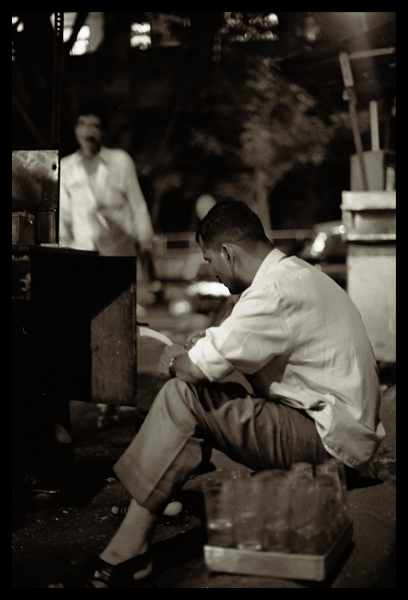 |
BishnuThe dispenser of wisdom. The "Gareeb Bhraman". He concocts our elixir. He is our beloved Chaiwalla. |
| 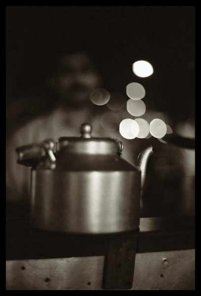 |
The Kettle of LoveThis is the vessel from which comes the liquid we consume in such copious amounts day by day. |
| 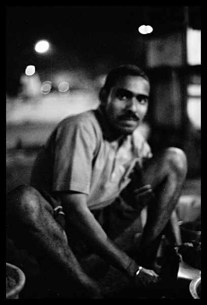 |
Bokri, Charli, ..., ManojBishnu's second in command. Without his occasional random thought we would be less happy then we usually are. |
| 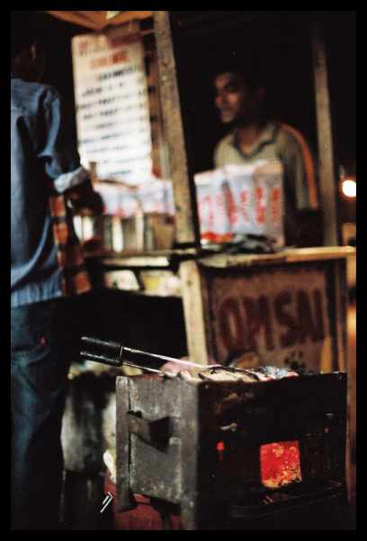 |
Which Sandwich?Food for thought. |
| 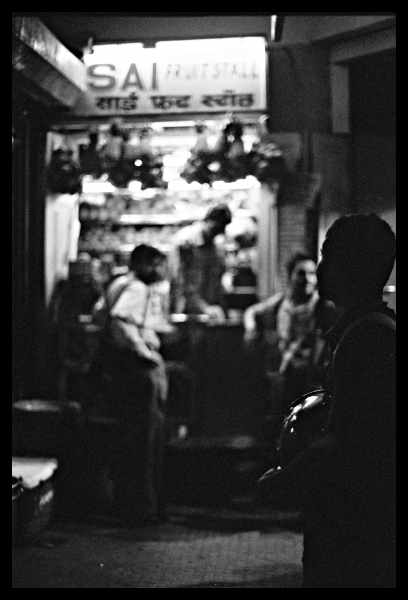 |
JuiceFresh lime. Rose lime. WaterLemon... |
| 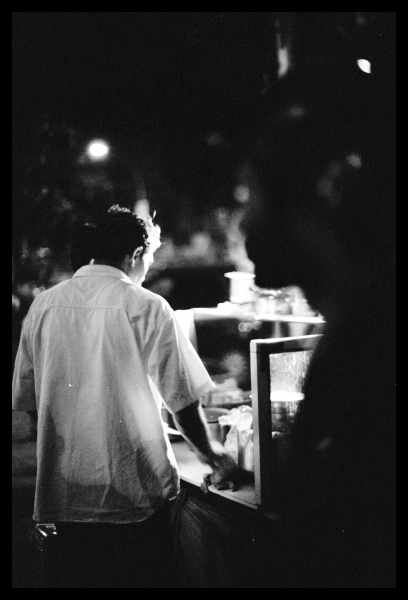 |
ChaatBhel, shevpuri, panipuri ... Add spice to life. |
| 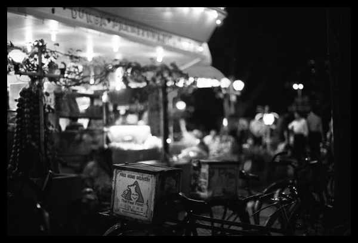 |
Durga Parmeshwari'sDP's is the high spot of naka life. Most celebrations happen here. |
| 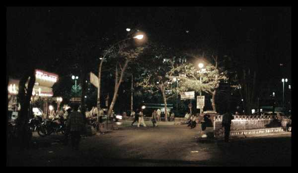 |
TriangleThe triangle. |
| 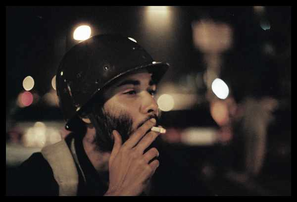 |
Naka SoldierDenizens of the naka. They come in all shapes and sizes. |
| 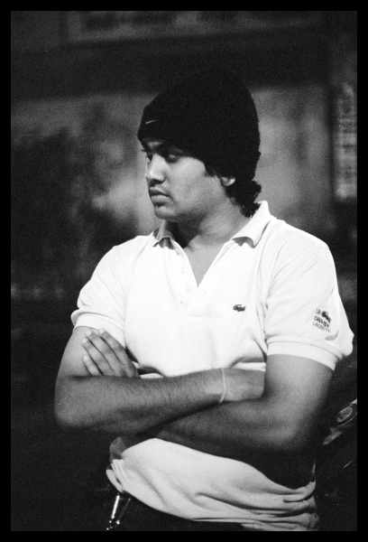 |
Attitude |
| 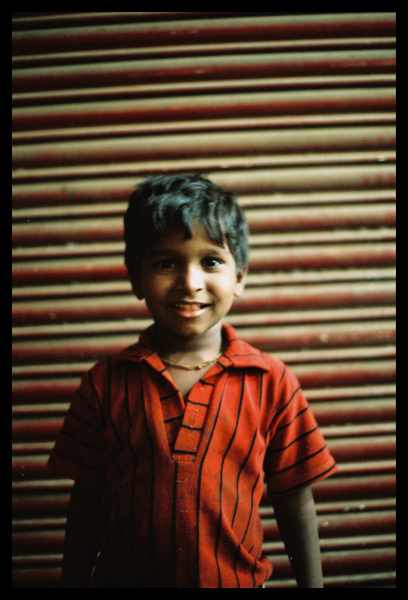 |
DudeThis one is on the younger side. He is happy. He inspires us to be happy. And most of the time all he wants is "do rupay". |
| 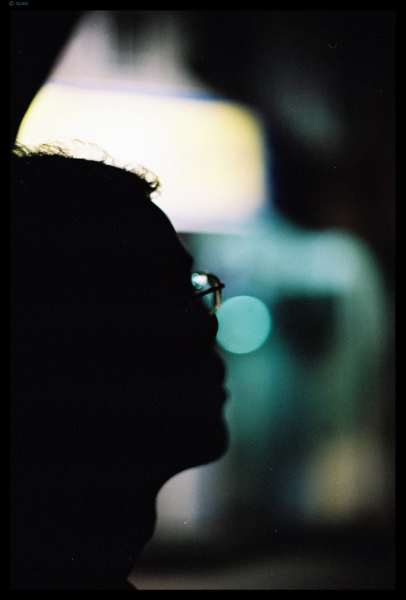 |
DreamContemplate, Introspect, Retrospect, dream, dream, dream ... |
| 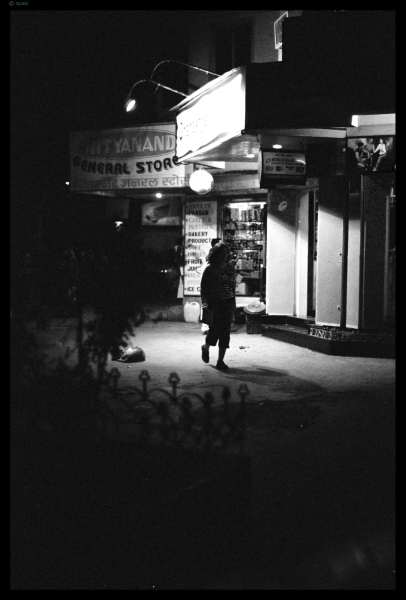 |
Time |
| 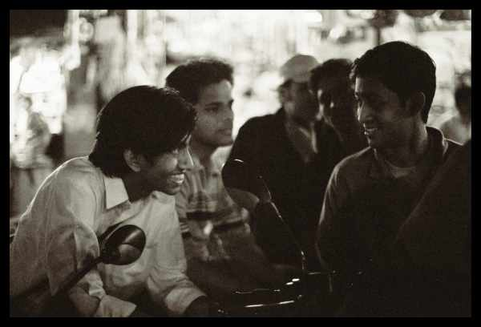 |
FriendsThis is a place to share. Thoughts, food, smoke, love, hate ... |